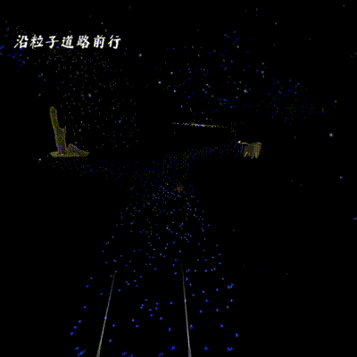
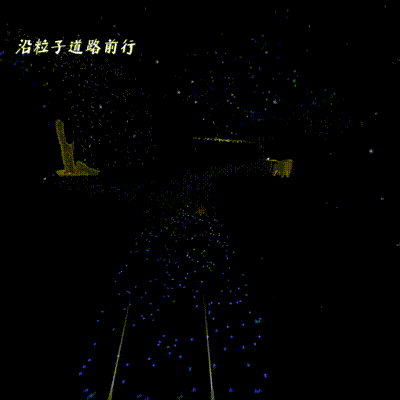

“元梦山海”首届中国虚拟现实内容生态大赛 - 《崂山道境VR：崂山修行录》
《崂山道境VR：崂山修行录》是一款融合了虚拟现实（VR）、扩展现实（XR）和人工智能（AI）技术的沉浸式互动体验作品。玩家将扮演一名初入道门的修行者，踏入中国道教圣地——青岛崂山，逐步领悟道家哲学与修行智慧。通过与虚拟道士、智能喜鹊等AI角色的互动，玩家可以深入了解崂山的自然风光、道教文化和历史故事，体验冠巾仪式、螳螂拳修炼和辟谷术等三大核心修行环节，逐步探寻道家“天人合一”的修行真谛。 该作品不仅呈现了高度真实的崂山场景，还创造了一个具有深度互动和教育价值的虚拟修行世界。通过创新的交互设计和丰富的文化内容，玩家可以获得一段精神修养的体验，重新审视生命的本质与自我的存在。 核心功能/产品亮点： XR与AI的深度结合： 项目中引入了智能喜鹊等AI角色，接入大型语言模型，预先准备相关提示词，充当虚拟导游。玩家可以与这些角色进行自然语言交流，深入了解关于崂山的道教文化的信息，兼具了互动性和教育性。 三大修行环节： 冠巾仪式：玩家将亲身参与道教入门的冠巾仪式，学习崂山道教的基础知识和礼仪。 螳螂拳修炼：通过VR动作捕捉，玩家可以学习并练习崂山传统武术螳螂拳，体验道家武术的魅力。 辟谷术修炼：在虚拟环境中体验辟谷修行，包括采摘食物与吐纳等，感悟养生与内修的精髓。
Watch demo on Bilibili
 
